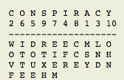
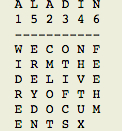

You get two keywords and a collection of jumbled letters which I call the code. You use the keywords to decipher the code and then use the code to go the webpage to get the message.
Once you get the code insert it at the end of this link "https://diaryofjoseea.github.io/Blast-From-Past/XXXXXXXXXXXX/" instead of the Xs. Don't forget the slash in the end.
You get the keywords from the footer of the previous message. So don't forget to look there at the end of this.
Now you use the keyword-1 first. Make a matrix with the keyword on top. Then assign digits according to the order of the letters in the alphabet. Then you fill the matrix with the code column by colum. For example:
The code is MSY WOVF LND EFR DOUE ITTE EIEM CCE RTXH OHN

Make the matrix with the keyword on top, write the numbers. A gets 1, next comes C in the letters so it gets 2 and so on. When there are two same letters, the left one gets the number first.
Then you put the first set of letters from the code in the column numbered one. MSY goes under A, the column numbered 1.
Now, count the number of letters in the matrix, in this case there are 35. You take the keyword-2 and make a matrix again with the keyword on top and assign the numbers. Now the keyword-2 is of 6 letters, so you divide 35 by 6, which gives you 5 rows of 6 letters and one row of 5 letters. You then start to fill the letters from the matrix into the second matrix row by row. take the first row, since we are suppose to have 5 rows of 6 letters, take the first 6 letters from row one of matrix 1 and fill it under column one of matrix 2. Do this for all.

Then just read the text row by row and you get the message. Complicated right???? Imagine the time it took to do this stuff.